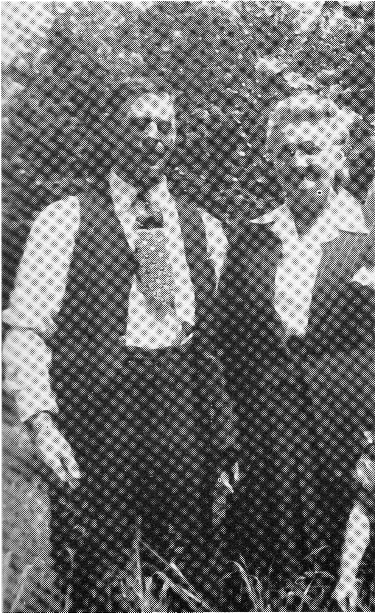

JOSEPHINE (L'HEUREUX ) ALAIN
I remember our Mother, Josephine Alain as a very quiet, but loving person who was busy continually caring for her husband, Alphonse and the seven children.
My first recollection is the ranch we lived on in the Jackfish Creek area, and where Raymond, Annette and I were born. Later, the family moved to Vawn, just across the road from Aunt Mary Louise and family. It was there where we three older children started school and where Camille and Jeanne were born. Afterwards, the folks bought a farm in Highgate, and that is where Yvette was born.

Many of our long, cold winter month evenings were spent playing cards with the whole family participating. Many other evenings, Mother did wool carding, knitting and sewing for the family while Dad wrestled with us children on the floor. We always knew we were loved.
When I was about ten years old the family moved back to Jackfish, near Grandparents L'Heureux who had given our parents a quarter section of land as a belated wedding gift. During summers and holidays, Grandfather had his six grandsons help out on his ranch, furnishing a pony for each. Then at the end of the vacation time, he took them all into town and completely outfitted each one.
Grandfather worked for the government in Indian Affairs, and how those natives did love him! They called him their Great White Chief. During the severe winters when food was short, Grandfather butchered beef from his own herds to feed his Indian friends.
When Dad took a job in Sweet Grass, the family moved there, and Raymond and I were assigned the job of feeding and caring for some 2,000 head of cattle. To feed the animals in winter we hauled hay with horses and sleighs fourteen miles. We also helped plant and harvest crops, and milked our own cows. The girls were kept busy helping Mother with gardening, canning, sewing and numerous other household duties. It was while we lived there that Annette was married.
After Yvette's birth, Mother's health took a turn for the worse, and she was nagged by an asthmatic condition for the rest of her life. It was during those years, under Mother's careful guidance, that all the children learned to do housework.
Finally, 1937, the family moved to the west coast, first to Mission City then to Port Moody, B.C. where Mother and Dad had the best years of their lives. Dad first worked in logging, then mill work.
The greatest inheritance a child could ever hope for was given by our beloved parents, Josephine and Alphonse Alain, in the form of respect for our elders and love for each other.
Francois (Frank) Alain
Josephine L'Heureux Alain
| NAME | BORN | MARRIED | SPOUSE | BOY | GIRL | DIED |
|---|---|---|---|---|---|---|
| Josephine | Oct. 18, 1886 | Aug. 5, 1908 | Alphonse Alain | 2 | 4 | Jan. 1, 1957 |
| Alphonse | , 1949 | |||||
| JOSEPHINE'S FAMILY | ||||||
| Raymond | Oct. 12, 1915 | , 1942 | Josephine Carrat | 0 | 2 | |
| Annette | Sept. 18, 1916 | Oct. 10, 1933 | Hector Gerard | 0 | 3 | |
| Hector | ||||||
| Francois | Dec. 11, 1917 | , 1945 | June Lowman | 0 | 3 | |
| Camille | Oct. 19, 1920 | , 1940 | Bill Eckstein | 2 | 1 | |
| Jeanne | June 18, 1922 | Jan. 20, 1940 | Arthur Harrison | 4 | 1 | |
| Yvette | Aug. 17, 1928 | Mar. 23, 1946 | Ernie Morgan | 2 | 1 | |
| Josephine's Grandchildren | ||||||
| RAYMOND'S FAMILY | ||||||
| Sheran | Dec. 16, 1943 | , 1969 | Dave MacLaren | 1 | 0 | |
| Bonnie | Jan. 7, 1946 | , 1966 | Garry Burnett | 1 | 2 | |
| Josephine's Great Grandchildren | ||||||
| Raymond's Grandchildren | ||||||
| SHERAN'S FAMILY | ||||||
| David | Feb. 20, 1971 | |||||
| BONNIE'S FAMILY | ||||||
| Tina | May 13, 1969 | |||||
| Raymond | Sept. 4, 1970 | |||||
| Felicia | Sept. 22, 1974 | |||||
| Josephine's Grandchildren | ||||||
| ANNETTE'S FAMILY | ||||||
| Irene | Aug. 19, 1940 | May 5, 1962 | Fred Roberts | 1 | 2 | |
| Rita | May 20, 1943 | July 1, 1961 | Howard Veltin | 2 | 4 | |
| Eliza | May 24, 1945 | Aug. 1, 1964 | Jim Disdero | 1 | 1 | |
| Josephine's Great Grandchildren | ||||||
| Annette's Grandchildren | ||||||
| IRENE'S FAMILY | ||||||
| Margaret | Mar. 12, 1963 | June 23, 1980 | Norman Pincombe | 0 | 1 | |
| Bruce | Sept. 24, 1964 | |||||
| Marie | Sept. 20, 1967 | |||||
| RITA'S FAMILY | ||||||
| Christine | Nov. 2, 1962 | 0 | 1 | |||
| Cathy | Feb. 26, 1963 | 1 | 0 | |||
| Marian | Mar. 5, 1964 | Oct. 5, 1985 | Douglas Krenbrink | 2 | 1 | |
| Ray | Feb. 14, 1966 | |||||
| Frank | July 7, 1969 | |||||
| Diane | Sept. 22, 1972 | |||||
| ELIZA'S FAMILY | ||||||
| Tara | Sept. 18, 1969 | |||||
| Sean | Jan. 12, 1972 | |||||
| Josephine's Great Great Grandchildren | ||||||
| Annette's Great Grandchildren | ||||||
| Irene's Grandchildren | ||||||
| MARGARET'S FAMILY | ||||||
| Vicky | Jan. 26, 1981 | |||||
| Rita's Grandchildren | ||||||
| CHRISTINE'S FAMILY | ||||||
| Lyndsay | Aug. 31, 1985 | |||||
| CATHY'S FAMILY | ||||||
| Jamie | July 29, 1983 | |||||
| MARIAN'S FAMILY | ||||||
| Anthony | May 8, 1983 | |||||
| Alex | July 22, 1986 | |||||
| Stephanie | July 22, 1986 | |||||
| Josephine's Grandchildren | ||||||
| FRANCOIS' FAMILY | ||||||
| Marilyn | Jan. 16, 1946 | , 1963 | Robert Bourne | 3 | 2 | |
| Christine | Aug. 7, 1949 | , 1967 | Robert Hiller | 1 | 1 | |
| Teena | Sept. 13, 1956 | , 1976 | Enoka Fetui | 1 | 2 | |
| Josephine's Great Grandchildren | ||||||
| Francois' Grandchildren | ||||||
| MARILYN'S FAMILY | ||||||
| Leslie | , 1963 | |||||
| Robert | , 1964 | |||||
| Terry | , 1966 | |||||
| Kenya | , 1972 | |||||
| Michelle | , 1982 | |||||
| CHRISTINE'S FAMILY | ||||||
| James | , 1970 | |||||
| Melody | , 1972 | |||||
| TEENA'S FAMILY | ||||||
| Tearre | , 1976 | |||||
| Shannah | , 1979 | |||||
| Cody | , 1982 | |||||
| Josephine's Grandchildren | ||||||
| CAMILLE'S FAMILY | ||||||
| Bryan | , 1941 | , 1961 | Betty Vicke | 2 | 2 | |
| Richard | , 1943 | , 1965 | Patricia Barclay | 1 | 1 | |
| Delorese | , 1950 | , 1983 | Ray Heffelfinger | 1 | 1 | |
| Josephine's Great Grandchildren | ||||||
| Camille's Grandchildren | ||||||
| BRYAN'S FAMILY | ||||||
| Coraline | , 1961 | |||||
| Brett | , 1964 | |||||
| Kelly | , 1966 | |||||
| Michelle | , 1968 | |||||
| RICHARD'S FAMILY | ||||||
| Stacy | , 1966 | |||||
| Shannon | , 1969 | |||||
| DELORESE'S FAMILY | ||||||
| Breanna | , 1983 | |||||
| Taylor | , 1985 | |||||
| Josephine's Grandchildren | ||||||
| JEANNE'S FAMILY | ||||||
| Myrna | Nov. 6, 1940 | , 1959 | Edward Freiheit | 2 | 1 | |
| Garth | Apr. 7, 1943 | , 1960 | Carole Yeager | 3 | 0 | , 1966 |
| Glenn | Dec. 5, 1947 | , 1970 | Heather Finney | 1 | 0 | |
| Brad | Sept. 7, 1952 | , 1970 | Diane Hollowinko | 1 | 1 | |
| Dennis | Oct. 13, 1953 | , 1978 | Sheryl Lake | 0 | 1 | |
| Josephine's Great Grandchildren | ||||||
| Jeanne's Grandchildren | ||||||
| MYRNA'S FAMILY | ||||||
| Lorrie | Mar. 13, 1960 | Randy Delong | 1 | 0 | ||
| Terrence | Nov. 21, 1962 | |||||
| Kelvin | Feb. 22, 1965 | |||||
| GARTH'S FAMILY | ||||||
| Jay | Aug. 28, 1961 | |||||
| Rusty | Feb. 1, 1963 | |||||
| Craig | July 26, 1964 | |||||
| GLENN'S FAMILY | ||||||
| Joel | Oct. 2, 1975 | |||||
| BRAD'S FAMILY | ||||||
| Ramie | Sept. 26, 1970 | |||||
| Aaron | July 5, 1977 | |||||
| DENNIS' FAMILY | ||||||
| Shyan | Oct. 10, 1978 | |||||
| Josephine's Great Great Grandchildren | ||||||
| Jeanne's Great Grandchildren | ||||||
| Myrna's Grandchildren | ||||||
| LORRIE'S FAMILY | ||||||
| Mitchell | Aug. 10, 1986 | |||||
| Josephine's Grandchildren | ||||||
| YVETTE'S FAMILY | ||||||
| Sandra | Sept. 29, 1946 | Mar. 28, 1969 | Art Hildebrant | 1 | 1 | |
| Robert | Feb. 6, 1948 | May 17, 1980 | Sharon Stanwood | 0 | 0 | |
| Randall | Nov. 5, 1952 | |||||
| Josephine's Great Grandchildren | ||||||
| Yvette's Grandchildren | ||||||
| SANDRA'S FAMILY | ||||||
| Robert | Feb. 8, 1973 | |||||
| Carrie | Aug. 16, 1978 | |||||
| TOTAL DESCENDANTS | 105 |
| LIVING | 102 |
| DECEASED | 3 |